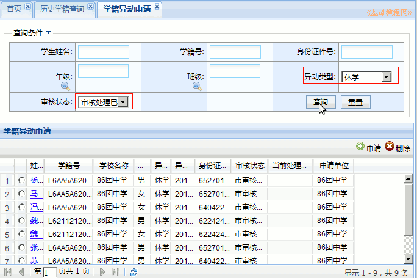

全国中小学生学籍管理系统操作指南
作者：TeliuTe 来源：基础教程网
二十七、异动在办业务查询 返回目录 下一课异动在办业务查询可以查询日常管理中正在进行中尚未完成的异动操作；
1、异动在办业务查询
1）依次点“学籍管理－综合查询－异动在办业务查询”，出来查询面板，点“查询”按钮，即可查询；
2）选择异动类型后，可以查询相应类型的异动列表；
3）操作已正常结束的异动，要到“日常管理－学籍异动申请”里，选择条件为“审核处理已结束”，选择一个“异动类型”，点“查询”；

本节学习了异动在办业务查询的基础知识，如果你成功地完成了练习，请继续学习下一课内容；
本教程由TeliuTe制作|著作权所有
基础教程网：http://teliute.org/
美丽的校园……
转载和引用本站内容，请保留作者和本站链接。